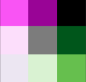

Pollination Key Areas
Nature's Contributions →
People's Needs →
✖
How to read these maps
These maps highlight the areas where Nature's Contribution to People (NCP) is key: where many people are exposed to high pressures requiring potential benefits (e.g pollution loads, coastal risks, or pollination-dependent crops), and nature’s contributions are highest. In these regions (shown in black), ecosystem protection will likely provide the greatest benefits.
Areas where people’s needs coincide with lower contributions of nature indicate benefit gaps, highlighting potential opportunities for ecosystem restoration to boost NCP – or areas where other investments beyond nature may be necessary to ensure well-being (shown in dark pink)..
Finally, areas where nature's contributions are relatively high, despite a relatively low "need" (either because there is little biophysical pressure, such as little pollution, or because population density is low) are colored in green.